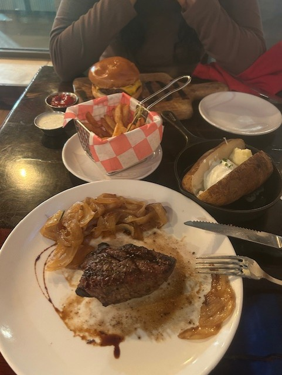
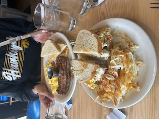

My favorites
Iowa Chop House
☆5/5
La Fiesta is a Mexican Restaurant located on 720 Pacha Pkway #2, in North Liberty Iowa. They specialize in traditional Mexican meals, like fajitas, tacos and their happy hour offerings..
At La Fiesta, I ordered Quesabirria Tacos, which is cooked beef, folded into a tortilla with cheese, served with a bowl of broth, for dipping. I asked for onion and cilantro on top, with salsas on the side. The quesabirrias have crispy tortillas, covered in cheese. The cheese was melty - all over the tortilla and beef, which was tender and smooth. The consume (broth) drips off the taco onto the plate. They were savory and rich, with rich crunchy onions on top. I love getting quesabirria every time I go to La Fiesta.
The fried ice cream at la fiesta is a favorite dessert of mine. It comes in a crispy warm crunchy tortilla bowl. The ice cream is rich, cold and creamy, and sweet. It comes covered in chocolate syrup, cinnamon and a cherry on top. Instead of being covered in normal corn flakes, or plain cereal, it came in fruity pebbles. This is hands down my favorite ice cream in all of Iowa.

Bluebird Diner
☆5/5
Bluebird Diner is an all day comfy eatery with oldy vibes, located on - . They have all day breakfast, lunch and dinner. Bluebird is favored locally by many, including myself and family!
My family and I always come on the weekends early in the morning for breakfast to beat everyone else coming since it's so popular. I always get the same - Mr.Bluebird sandwich with sauteed vegetables, turkey and hash browns on the side, and I share with my sister, who gets 2 chocolate chip pancakes and we go halfsies. The sandwich is always full from bread to bread, warm and crispy. The eggs are scrambled with the vegetables like bell peppers, onions, greens, and the turkey too. It is one of our favorite things to get in my family.
The chocolate chip pancakes are always big and warm, with a big scoop of butter on top covered in chocolate chips, and smothered in maple syrup. Fluffy, filling, a feast on pancakes.
Bluebird Diner
☆5/5
Bluebird Diner is an all day comfy eatery with oldy vibes, located on - . They have all day breakfast, lunch and dinner. Bluebird is favored locally by many, including myself and family!
My family and I always come on the weekends early in the morning for breakfast to beat everyone else coming since it's so popular. I always get the same - Mr.Bluebird sandwich with sauteed vegetables, turkey and hash browns on the side, and I share with my sister, who gets 2 chocolate chip pancakes and we go halfsies. The sandwich is always full from bread to bread, warm and crispy. The eggs are scrambled with the vegetables like bell peppers, onions, greens, and the turkey too. It is one of our favorite things to get in my family.
The chocolate chip pancakes are always big and warm, with a big scoop of butter on top covered in chocolate chips, and smothered in maple syrup. Fluffy, filling, a feast on pancakes.